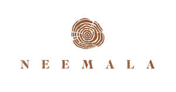

Trade Mark Journal No.2025/015 11 April 2025
UK00004179161 25 March 2025 (35,39,41,43,44)

- Class 35
- Advertising; business management, organization and administration; office functions; business management of hotels, lodges and safari resorts; consultancy in relation to business development for hotels, lodges and safari resorts; business consultancy and management services for hospitality, travel and tourism industries; hotel and lodge management services; marketing, advertising, and promotional services for hotels, safari lodges, travel and tourism businesses; online and offline booking management services for accommodations and travel experiences; procurement services for hotels and lodges, including sourcing of hospitality supplies; loyalty, incentive and membership programs related to hospitality services; business consulting for wellness and spa retreats; retail and wholesale of goods or services relevant to safari lodges and resorts; retail and wholesale of safari-related products and experiences, including outdoor and adventure products.
- Class 39
- Transport; packaging and storage of goods; travel arrangement; logistics services and coordination of travel itineraries for lodge guests; travel arrangement, organization and booking services for safari lodges and retreats; transport and transfer services for guests, including airport shuttle and safari vehicle transport; organizing and operating guided tours, excursions and safari experiences; travel information and consultancy services related to safari lodges and eco-tourism; booking and reservation services for adventure activities, excursions and travel packages; arranging transportation for hospitality and tourism purposes.
- Class 41
- Education; providing of training; entertainment; sporting and cultural activities; providing entertainment services, including cultural performances, storytelling and live music events at safari lodges; organizing and conducting adventure activities, including guided hikes, safari drives, wildlife excursions and outdoor sports such as trail running, mountain biking, and kayaking; providing fitness and wellness training, including yoga and meditation retreats; arranging and conducting educational programs related to wildlife conservation, eco-tourism and sustainability; organizing workshops, events and seminars on hospitality and wellness topics; providing facilities for sports and leisure activities; booking and organizing corporate team-building events and retreats.
- Class 43
- Services for providing food and drink; temporary accommodation; providing temporary accommodation in a safari lodge, eco-resort or boutique hotel; hospitality services, including booking and reservation of accommodations; providing food and beverage services in restaurants, cafés and bars within safari lodges; catering services for private events, weddings, and corporate retreats; organizing and providing themed dining experiences, including outdoor bush dining and sunset meals; providing glamping and eco-friendly lodging services; operating and managing safari lodges and boutique hospitality establishments; providing accommodation in luxury tented camps.
- Class 44
- Medical services; veterinary services; hygienic and beauty care for human beings or animals; agriculture, aquaculture, horticulture and forestry services; wellness and spa services, including massage therapy, beauty treatments and holistic healing; providing health and wellness retreats incorporating yoga, meditation and relaxation programs; alternative therapy services, including aromatherapy, hydrotherapy and energy healing; nutritional and dietetic consultancy services provided as part of wellness retreats; providing facilities for wellness, detox and rejuvenation programs; offering guided mindfulness and mental well-being workshops; eco-spa services integrating natural products and sustainable treatments; wellness coaching and personalized health retreats.
ARIEL VADEE
Representative: HGF Limited